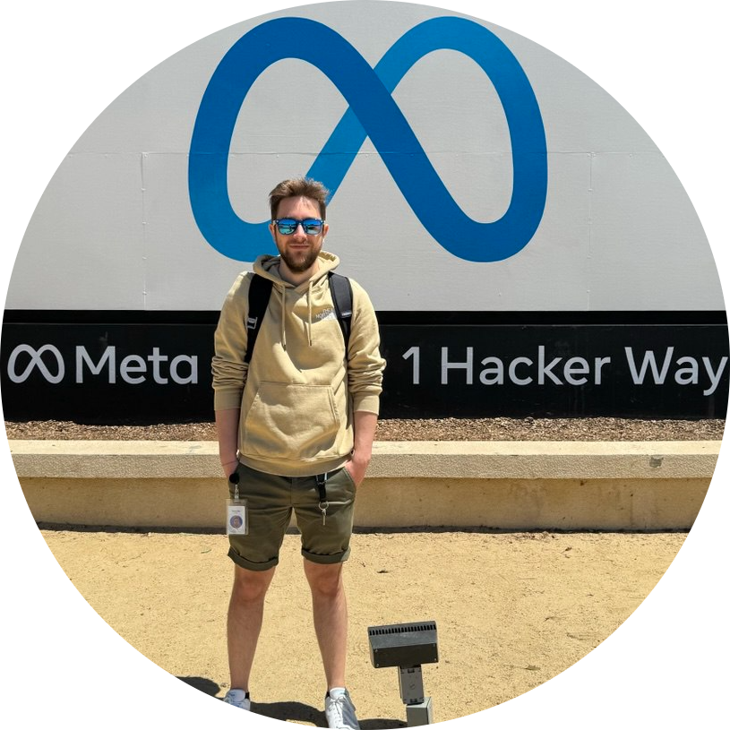
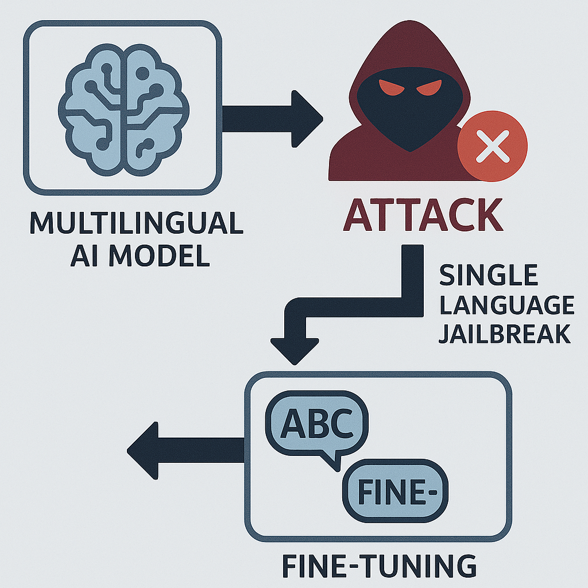
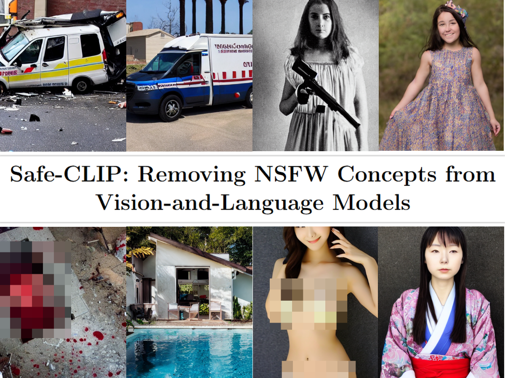
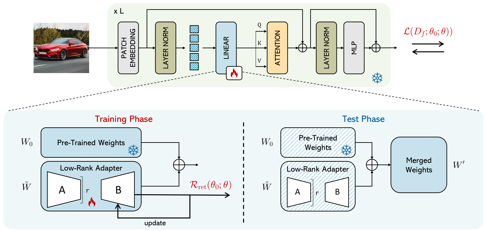

Job offer info:
Email |
CV
Social:
Google Scholar |
LinkedIn |
Github
My name is Samuele Poppi, and I am a dedicated researcher in Responsible AI and AI Safety, with a focus on generative multimodal AI systems. I am about to complete my Ph.D. in Artificial Intelligence, at the University of Pisa and the University of Modena and Reggio Emilia, where I have developed extensive expertise in responsible and safe AI.
Additionally, I gained valuable experience as a Research Scientist Summer Intern at Meta GenAI Safety Alignment in 2024, where I worked for six months on advancing safety frameworks for AI models.
| Mentors | Cristian Canton Ferrer, Oliver Aobo Yang, Jianfeng Chi |
| Topics | Responsible AI for LLMs, Jailbreaking Attacks for LLMs, Fragility of Multilingual LLMs |
| Mentors | Marko Bertogna, Micaela Verucchi |
| Topics | Computer vision algorithms for underwater and pick and place |

Samuele Poppi*,2,3, Zheng-Xin Yong*,4, Yifei He5, Bobbie Chern1, Han Zhao5, Aobo Yang†,1, Jianfeng Chi†,1
Findings of the Nations of the Americas Chapter of the Association for Computational Linguistics (NAACL), Albuquerque, NM, USA 2025 — Poster
Affiliations:*,1Meta,2University of Pisa, 3University of Modena and Reggio Emilia, 4Brown University, 5University of Illinois Urbana-Champaign
Project Page | GitHub | 📝 arXiv | bibtex
We show that fine-tuning in a single language compromises safety across all languages (cross-lingual generalization). We hypothesize that multilingual LLM safety relies on both language-specific and language-agnostic parameters. To study this, we introduce Safety Information Localization (SIL), which identifies the subset of model weights responsible for safety alignment. Our analysis finds that 20% of parameters encode most language-agnostic safety knowledge, with substantial cross-lingual overlap. Yet, freezing them fails to block attacks, revealing alternative learning pathways [3]. Finally, stitching these parameters into another safety-aligned model is enough to jailbreak it, confirming their effectiveness and transferability.
* Work done during internship at Meta † Equal advising

Samuele Poppi*,1,2, Tobia Poppi*,1,2, Federico Cocchi*,1,2, Marcella Cornia1, Lorenzo Baraldi1, Rita Cucchiara1
European Conference on Computer Vision, Milano, Italy 2024 - Poster
Affiliations:*,1University of Modena and Reggio Emilia,2University of Pisa
Project Page | 🤗 Hugging Face | GitHub | 📝 arXiv | bibtex
We tackle toxicity in generative AI by aligning CLIP encoders with safety standards. We generate the the ViSU dataset, obtained by jailbreaking LLaMA2-7B-Chat, and it pairs quadruplets of safe and NSFW image-text examples. Leveraging the power of ViSU, Safe-CLIP applies knowledge editing techniques to remove unsafe associations in CLIP’s embeddings, thus ensuring outputs remain safe even with NSFW inputs, advancing responsible multimodal AI. These safe encoders can be attached and detached from any generation pipeline, due to their modularity.
* Equal contribution

Samuele Poppi1,2, Sara Sarto1, Marcella Cornia1, Lorenzo Baraldi1, Rita Cucchiara1
International Conference on Pattern Recognition, Kolkata, India 2024 - Poster
Affiliations:1University of Modena and Reggio Emilia,2University of Pisa
The GDPR and CCPA have spurred interest in removing sensitive information from pre-trained models without retraining. Standard unlearning approaches use a two-sided loss function with retaining and forgetting, relying on a forget set (Df) and a retaining set (Dr), to preserve knowledge and ensure accuracy. These methods (1) face scalability challenges, (2) are resource-intensive, and (3) become impractical without access to retaining training data. This paper introduces a trainable low-rank decomposition to enable targeted information removal without a retaining dataset, significantly reducing computational and memory costs.